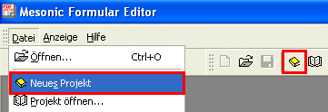
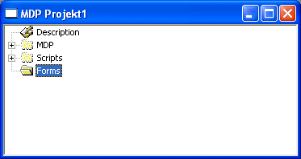
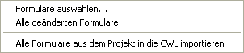
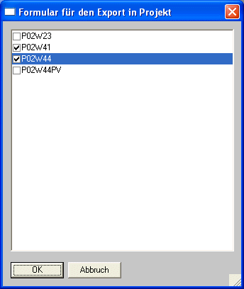
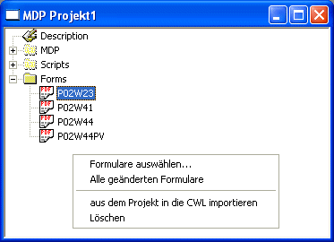
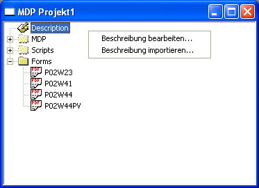

Um ein neues MDP-Projekt zu erstellen, ist der erste Schritt der Aufruf "Neues Projekt"; über die Symbolleiste, oder über den Menüpunkt Datei/Neues Projekt.

Dadurch wird ein neues Projekt-Fenster geöffnet, bei dem der Ordner "Form" bereits, farbig hinterlegt, gekennzeichnet ist.

In diesen Ordner können nun angepasste Formulare eingefügt werden.
Voraussetzung dass angepasste Formulare hier hinzugefügt werden können ist, dass sie ausgecheckt sind, d.h. dass sie den "Checkout Status" haben.
Durch einen Klick mit der rechten Maustaste wird ein Kontextmenü geöffnet, indem folgende Punkte zur Auswahl stehen:

ü Formulare auswählen...
Es wird
ein Fenster geöffnet, indem alle ausgecheckten Formulare angezeigt
werden.

ü Alle geänderten Formulare
Ohne
zusätzliche Auswahlmöglichkeit werden ausgecheckte Formulare dem Ordner "Forms"
hinzugefügt.
ü Aus dem Projekt in die CWL
importieren
Über diesen Eintrag werden Formulare aus einem Projekt in die CWL
importiert - Wird beim Erstellen eines neuen Projekts nicht
benötigt.

Befinden sich nun Formulare im Ordner Forms, steht eine weitere Auswahl zur Verfügung:
ü Löschen
Das markierte Formular
wird wieder aus dem Ordner entfernt (mittels Entfernen-Taste können Formulare
ebenfalls gelöscht werden).
Um ein Projekt näher zu beschreiben, kann dies wie folgt durchgeführt werden:
Wählt man mit der rechten Maustaste den Ordner "Description" an, stehen zwei Möglichkeiten zur Verfügung:

ü Beschreibung bearbeiten
Es
öffnet sich ein Fenster, indem das Projekt beschrieben werden kann. Bzw. indem
die Beschreibung des Projekts angezeigt wird.
ü Beschreibung importieren
Der
Dateisuchdialog wird geöffnet, indem nach einem RTF-Text (Projektbeschreibung)
gesucht, und dieser als Beschreibung übernommen werden kann.
Wurden das Projekt fertig erstellt, kann dieses nun unter einem Namen mit der Dateiendung MDP abgespeichert werden.
Zum Beenden eines Projekts ohne es abzuspeichern, genügt es das Projekt-Fenster zu schließen (Schließen durch Anklicken des Kreuzes) und die Sicherheitsabfrage mit Nein zu bestätigen.